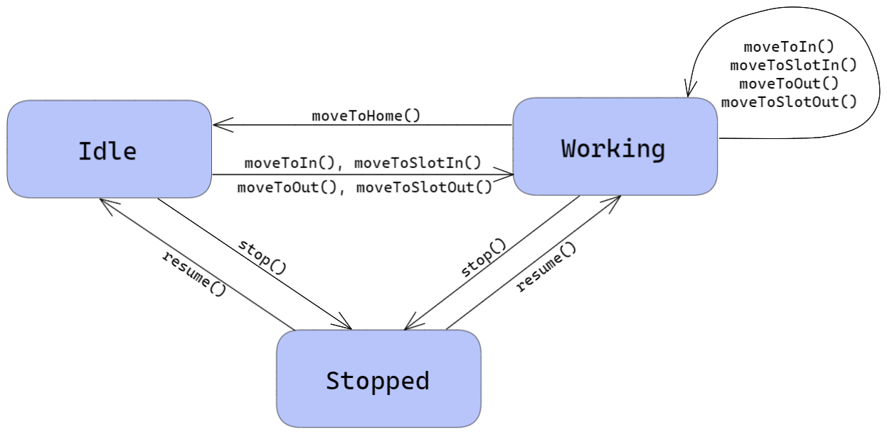

Introduction
Requirements
The document written by the customer with the requirements can be found here.
Requirement analysis
Dictionary
Nouns
ParkManagerService : The software system which will implement the required automation functions;DDR robot : Differential Drive Robot. Has the form of a square of side length RD (link)transport trolley : A DDR robot which is used to move cars from the INDOOR to the selected parking-slot. It can be in three different states:idle , the robot is waiting for the next command,working , the robot is moving around the parking-area, executing a command,stopped , the robot is stopped by theparking-manager ;home : Starting position for the robot, located in the top-left corner of the environment. When the robot completes a request, and there are no further instruction, it will return in this position;parking-area : Empty environment outside which the robot cannot go. It includes INDOOR, INDOOR-area, OUTDOOR, OUTDOOR-area, parking-slots, thermometer and a fan;INDOOR : Cars use this gate to enter the parking-area;INDOOR-area : The transport trolley positions itself in this location to pick the car parked in front of the INDOOR. It is located inside the parking area;weightsensor : Sensor to measure the weight of the car, located in front of the INDOOR;OUTDOOR : Cars uses this gate to exit from the parking-area;OUTDOOR-area : The transport trolley positions itself in this location to leave the car just outside the OUTDOOR. Drivers pick them up there. It is located inside the parking area;outsonar : Sensor that detects cars outside the OUTDOOR;parking-slots : Dedicated slots inside the parking area where cars are left by the transport trolley. There are 6 parking-slots;thermometer : Sensor used to measure the temperature inside the parking-area;fan : A fan used to reduce the temperature inside the parking-area. It can be manually activated by the parking manager, or it can activate automatically. It can be either on or off;map : Schematic representation of the parking-area, made by a grid of squares of side length RD;fixed obstacles : Immovable objects that the robot cannot traverse;enterRequest : The request made by the client to the ParkManagerService to book a parking-slot;carEnter : The request made by the client to the ParkManagerService after enterRequest when he parks his car in front of the INDOOR and press the CARENTER button;pickUp : The request made by the client to the ParkManagerService when he wants to pick up his car. This request can be made after carEnter;parking-manager : Person in charge of the parking-area, who supervises the state and handles critical situations;client : Person using services of the parking-area. In particular, he will leave and pickup the car;ParkServiceGUI : GUI for parking clients to leave and pick up cars. It can be accessed by the client by using their own personal device;ParkServiceStatusGUI : GUI for the parking-manager to manage some aspects of the parking area;SLOTNUM : Id of the parking slot given to the client, representing the location where the car will be placed by transport trolley. If equal to 0, no parking slots are availableTOKENID : Sequence of characters. The characters should be generated in a manner that:- Two cars cannot have the same TOKENID while they are in the parking area
- It is impossible to guess the generated ID (cryptographically secure random)
- The generated ID must have a significative number of character
Alarm (to the parking manager): notification for the parking manager to signal if the OUTDOOR-area is not freed within DTFREE interval of time;current state : Collection of the following information:- current temperature inside the parking-area;
- current state of the fan (
on oroff ); - current state of the transport trolley (
idle ,working orstopped );
Verbs
leave the car : after receiving the SLOTNUM, the client leaves the car in the INDOOR-area and presses the CARENTER button on the ParkServiceGUI. He will then receive the unique TOKENID;pick up the car : the client uses the ParkServiceGUI to request the pick up, by sending the TOKENID previously received. After the car is moved to the OUTDOOR-area by the robot, the client takes the car and frees the area within DTFREE interval of time;start the fan : when the current temperature inside the parking-area exceeds TMAX, the system starts the fan automatically;stop the fan : when the current temperature goes below TMAX, the system stops the fan automatically;stop the robot : when the current temperature inside the parking-area exceeds TMAX, the parking-manager stops the robot, blocking any successive move until he starts the robot again;start the robot : after the parking-manager stops the robot, it remains stopped until restarted by the parking-manager;
Additional requirements and details
The following requirements are the result of further clarification with the customer:- The fan is automatically activated/deactivated by ParkManagerService. The parking manager cannot overtake control of it;
- The transport trolley cannot be stopped if TA <= TMAX;
- It is impossible that a user reaches the INDOOR without having reserved a parking slot from the GUI;
- It is impossible that a user parks in the INDOOR area and does not press the CARENTER button;
- It is impossible that a user notify his interest in entering his auto in the parking-area and later changes his mind and does not park in the parking area;
- It is impossible that a customer reserves a parking slot and do not show up at the parking area;
- When client try to make an enterRequest, carEnter or pickUp, if the transport trolley is stopped, the client should see an error message;
- When parking manager stops the transport trolley, the transport trolley won't accept further commands but finishes the move it was doing (e.g. if it is going to the INDOOR area, it reaches the INDOOR and then stops accepting other requests);
- When the parking manager starts the transport trolley, it should continue the move it was doing before it was stopped;
- Temperature is in Celsius;
- TMAX and DTFREE will be placed in a configuration file accessible by the application;
Map of the parking-area
The customer provides a library in Kotlin to represent the map of the parking-area.Below there is a representation of the parking area, the

|

|
Additional user stories
In order to explain better some edge cases, some examples were made with the customer, reported below.- Client1 notify his interest in entering his auto in the parking-area.
- Client2 submit the request to pick up his car but receive a notice message from the application requesting to wait. The request will be served when the previous ends.
- Afterwards, Client3 wants to enter his auto in the parking-area but receive a notice message from the application requesting to wait. The request will be served when the previous ends.
- Client2 and Client3 remain waiting.
- Client1 finish his parking phase.
- Without further interaction by Client2, ParkManagerService fulfills his request.
- Without further interaction by Client3, ParkManagerService fulfills his request.
- The temperature goes above TMAX
- The parking-manager stops the transport trolley
- Client1 notify his interest in entering his auto in the parking-area or press CARENTER. Client1 receive a notice message from the application stating that the system is temporary unavailable.
- Client2 submit the request to pick up his car but receive a notice message from the application stating that the system is temporary unavailable.
- The parking-manager restart the trolley as soon as the temperature goes below TMAX
- Client2 makes again his request and ParkManagerService fulfills it.
- Client1 tries to notify again his interest in entering his auto again as if it was just arrived, without record of his waiting.
Risk analysis
There are some risks involving the management of a physical area and storing valuable vehicles, discussed in the tables below.Table of Goods Evaluation
| Good | Value | Exposure |
|---|---|---|
| System | High | High. Financial and image loss, System restoration cost. Parking unable to work |
| TOKENID | High | High. Could be used to steal a car. Financial and image loss. |
| Transport trolley | High | High. Could be used to steal or damage a car (bumping into it). Financial and image loss. |
| Faking temperature or stopping fan | Medium | Medium. Could result in a too hot environment that could cause the devices to fail |
| Status of the parking area | Low | Low. No useful data from those information |
Table of threats and checks
| Threat | Probability | Checks | Feasibility |
|---|---|---|---|
| Stole or guess of TOKENID | Low. It is quite long and generated as a cryptographically secure pseudo-random string | Limitation of the number of wrong TOKENID submitted | Low implementative cost |
| Operations log | Low implementative cost | ||
| Interception of communications between client and server | High. The system is Client/Server and the connection are done in insecure networks. | Asymmetric key communication encryption | Low implementative cost |
| Operations log | Low implementative cost | ||
| Control of the transport trolley | Medium. No encryption on the communication between it and the Service. No authentication to submit commands | Add encryption and authentication | Medium. Needs to change the software provided by the customer |
| Use a secure network for the communication | Hardware cost for all the network devices that cannot be shared with other devices |
Security Technology Analysis
| Technology | Vulnerability |
|---|---|
| Use of TOKENID |
|
| Communication encryption between Service and users |
|
| Client/Server architecture |
|
List of requirements
Functional requirements
- The client can book a parking slot through ParkServiceGUI
- The system sends the client an id of the parking-slot if there are slots available, otherwise it sends 0
- The client notifies the ParkManagerService when he leaves the car in front of the INDOOR
- The system can transport the cars from the INDOOR to the parking slots, and from the parking slots to the OUTDOOR by sending command to a transport trolley
- The system should provide a unique identifier to the client (TOKENID), in order to retrieve the car later
- The system must understand if the client's car is not in front of the INDOOR during F3
- The system can accept the request of a client to park in there only if there is at least one parking-slot available, the weigthsensor don't detect a car in front of the INDOOR, and the transport trolley is either at home or working
- When client try to make an enterRequest, carEnter or pickUp, if the transport trolley is stopped, the client should see an error message
- The client can pick up the car by sending the TOKENID through ParkServiceGUI
- The system must infer the correct parking-slot from the corresponding TOKENID
- The system can accept the request of a client to pick up the car only if the TOKENID is valid, the outsonar don't detect a car in front of the OUTDOOR, and the transport trolley is either at home or working
- The parking manager can see the current state of the parking area through ParkServiceStatusGUI
- The parking manager should be able to stop the transport trolley when TA > TMAX through ParkServiceStatusGUI
- The parking manager should be able to start the transport trolley when it is stopped through ParkServiceStatusGUI
- ParkManagerService should start the fan when TA > TMAX and stop it when TA <= TMAX
- ParkManagerService should notify the parking manager when the OUTDOOR is not cleaned within DTFREE interval of time
- The trolley must go back to home when there are no more requests available
- The trolley should not walk over parking-slots or obstacles
- Creation of a log to track action done in the system and exchanged messages
- Automatic mechanism of log analysis
Non-functional requirements
- The TOKENID generated must be secure and not easy to guess
- It should be possible to swap between real sensor and simulated mock-objects with ease
- Data stored and exchanged must be protected
System architecture
From the requirements given by the customer, we can deduce the structure of the system. It is a distributed system, with different devices communicating with each other in different places of the parking area. More specifically, we have:- The client devices to interact with the ParkServiceGUI;
- The parking manager device to interact with the ParkServiceStatusGUI;
- The ParkManagerService core;
- The transport trolley;
- The three sensors and the fan.
Transport Trolley
The transport trolley is the core entity of the project, as it is responsible for transporting the cars around the parking. The customer has provided us the model and the code of a basicrobot. The basicrobot is able to execute basic move commands, is a CoAP-observable resource, and can interact with both a physical or virtual robot, simply by changing a configuration file. It is modelled as an actor. Because we are in a distributed system, and most likely the transport trolley will be on a separate node, the transport trolley will be modelled as an active entity, an actor, that wraps the basicrobot. The following graphs show the interaction between the transport trolley and the ParkManagerService. These basic interactions can be deduced from the requirements. Further interaction will be added if needed in the problem analysis. Since we have clarified with the customer that the requests fot the moves are not handled in parallel, we have represented them as synchronous request, while the stop and resume command are dispatch.In addition, is available an API documentation to communicate with a virtual robot to simulate the moves of a real robot in a virtual environment.
As mentioned in the requirements, the transport trolley can be in three different states:

Other devices
We have different devices in the parking area: weight-sensor, outsonar, thermometer, fan. As they will all be on different nodes inside the parking area, we will also model these devices as actors. The customer has already provided us the code and the model of both sonar device and SonarAlone.c. The former is modelled as an actor, which is capable of emitting event and sending dispatch, while the latter is a simple program that read and writes as output the distance measured by the sensor. For the weight-sensor, the thermometer and the fan, the customer did not provide us with any code or strict requirements. The weight-sensor by requirements doesn't have to communicate the weight the car, but acts only as a detection device. The accuracy of the thermometer is one degree. The interaction between these devices and the ParkManagerService will be defined in the Problem Analysis.
Logical Architecture
The following image shows all the devices in the parking area, and how they are connected to each other. For the sake of completeness, we also provided a machine-readable model, which highlights only the core aspects of the system, namely, the park phase and the pick-up phase.Problem analysis
Devices
It is now important to analyze how the devices are made and how they communicate with the ParkManagerService. We already discussed that the devices are physically distant from each others and the Service, so they should communicate with message-passing. More information on the hardware of the single components are reported below:thermometer : a DS18B20 device is a low-cost sensor to measure the temperature, connected via cable.outsonar : The sensor is connected to the software via a cable and supports platforms like Arduino and Raspberry Pi.fan : can be controlled simply giving or removing power from it. A relay could be used to switch it on and off from a computer
Communication between devices
Given the Requirements analysis it is now possible to define the interaction between all the devices in the System.fan : accepts only start/stop commandsoutsonar : the customer provided us, besides the SonarAlone.c program, even some applications that sends events for every reading or every bunch of readings. To avoid unnecessary traffic on the net it is better to re-implement it in such a way that only send events when a car arrives or leaves. To do so, it could read a threshold value from a configuration file.weight sensor & thermometer : similarly to the outsonar, it is better to embed these sensors in actors, so that they only send events when the value exceeds a certain threshold value. This value could be set using a configuration file.
There are some possible protocols for communicating between the different devices. The most relevant are:
CoAP : (a)synchronous one-to-one communication protocol based on a request-response model, has even some implementations that runs over DTLS, even if it is not as popular as webSockets on TLS.MQTT : asynchronous publish-subscribe model with a many-to-many mindset, not required in this scenarioHTTP : it is quite heavy and unidirectional, but could be used for example for the fan, that should only receive commands and reply with an ok/non-ok message. On the other hand, in this way, to provide a layer of encryption, the fan should have an HTTP server and a TLS certificate that should be renewed when expired, complicating the maintenance.WebSockets : lighter than HTTP but still heavy. Bi-directional and supports encryption with minimum effort. Because of his bi-directionality, only the Service should act as a server and the other devices could easily connect to it and exchange messages, requiring only one server and one TLS certificate.
In this case, the Service has to be located in the neighborhood of all the sensors, while with encryption it could be located everywhere and provide his services with a reduced risk of in-place maintenance.
At this point, the two main alternatives are CoAP and WebSockets. We will use CoAP because it is lighter and already integrated with the modelling language qak provided by the customer.
Planner
In order to move the transport trolley around the map, it is necessary to plan all the moves needed for the transport to reach his destination.The customer provided us a planner that uses the map referenced in the requirement analysis to provide a list of moves that the transport trolley has to do in order to reach the given destination.
The code is available at this location. The class
plannerUtil is located in
itunibo.planner package and can be imported in the project adding
IssActorKotlinRobotSupport-2.0
as requirement in the gradle build file.
GUI interaction
The two GUIs are represented in a different context because the ParkManagerService could expose some APIs completely independent of the GUIs, that can be served even by different machine or installed as mobile apps on users' devices. In the model above, the requests without an explicit reply imply a simple acknowledgement message.
It is also available an executable model of the system written in qak language.
Test plans
Unit tests
The test plans listed here are done in TestPlan0 and in TestPlan2.
testClientEnterRequestThe client requests a slot and there is one slot available, the weigthsensor don't detect a car in front of the INDOOR, and the transport trolley is either at home or working. (F1, F2, F7)Conditions
|
testClientEnterRequestNoSlotsFreeThe client requests a slot but there is not a free slot. (F1, F2, F7)Conditions
|
testClientEnterRequestIndoorOccupiedThe client requests a slot but there the weightsensor still detects a car. (F1, F7)Conditions
|
testClientEnterRequestStoppedTrolleyThe client makes an enter request, but the parking trolley is stopped. (F1, F7, F8)Conditions
|
testClientCarEnterThe client has received SLOTNUM between 1 and 6, left the car in front of the INDOOR-area and pressed CARENTER (F3, F5, F6)Conditions
|
testClientCarEnterStoppedTrolleyThe client has received SLOTNUM between 1 and 6, left the car in front of the INDOOR-area and pressed CARENTER, but the parking trolley is stopped. (F3, F8)Conditions
|
testClientCarEnterIndoorNotOccupiedThe client has received SLOTNUM between 1 and 6 and pressed CARENTER, but didn't leave the car in front of the INDOOR-area. (F6)Conditions
|
testClientPickupThe client request to pick up his car by submitting the tokenID, and then leave. (F9, F10, F11)Conditions
|
testClientPickupOutdoorOccupiedThe client request to pick up his car by submitting a valid tokenID, but the OUTDOOR-area is occupied. (F9, F10, F11)Conditions
|
testClientPickupWrongTokenThe client request to pick up his car by submitting the tokenID, but the tokenID is not valid. (F9, F10, F11)Conditions
|
testClientPickupStoppedTrolleyThe client request to pick up his car by submitting a valid tokenID, but the parking trolley is stopped. (F8, F9)Conditions
|
testTemperatureChangeFanOnThe temperature goes over TMAX. (F15)Conditions
|
testTemperatureChangeFanOffThe temperature goes under TMAX. (F15)Conditions
|
testStopTrolleyThe parking manager requests to stop the trolley and the temperature is over TMAX. (F13)Conditions
|
testStopTrolleyTemperatureErrorThe parking manager requests to stop the trolley but the temperature is not over TMAX. (F13)Conditions
|
testResumeTrolleyThe parking manager requests to resume the trolley. (F14)Conditions
|
Work plan
We can assess the time needed to implement all the feature discussed above as follows:
Total work estimate: 12 days and 1.5 hours.
- Communication with devices (total 2 days)
- Sonar: 3h
- Fan: 1h
- Thermometer: 2h
- Weight sensor: 2h
- Transport trolley: 1 day
-
ParkManagerService core: 7 days
- client logic: 4 days
- manager logic: 2 days
- tests: 1 day
- API endpoints for 2 GUI: 8h
- ParkServiceGUI (total 10h)
- Design (including choice of theme): 3h
- Realization (only client side): 7h
- ParkServiceStatusGUI (total 7.5h)
- Design (same theme of above): 1.5h
- Realization (only client side): 6h
Total work estimate: 12 days and 1.5 hours.
Project
The project will be divided in sprint.
Testing
In order to test the application, multiple test classes were written. Once written in a specific sprint, they
were executed in following sprints in order to check that the functionalities were still working.
-
TestDB , tests the saving and retrieval of the informations to and from the database, working from sprint1. -
TestPlan0 , tests the client logic, planned in sprint0, working from sprint1. -
TestPlan2 , tests the manager logic, working from sprint2. -
WebappApplicationTests , tests the API functionalities, working from sprint2.
Deployment
For deployment, as explained during sprint4, we used docker. In order to start the application, it is first necessary
to go to the root folder and start the trolley and the basicrobot, with one of the following commands:
After that, to start the application it is only necessary to run the following command:
The web server listen for requests on port 8081.
docker-compose -f basicrobotVirtual.yaml upfor the trolley in the virtual environment or
docker-compose -f basicrobotMbot.yaml upfor a real Mbot trolley.
After that, to start the application it is only necessary to run the following command:
docker-compose -f ParkManagerService.yaml up
The web server listen for requests on port 8081.
Maintenance
As for our organization for updates, exposed in a section of sprint4, in order to update the project
in docker it is necessary to push the changes to the master branch in github. The folders with the final code that
have to be edited are web , core and sensors , located in the main folder.